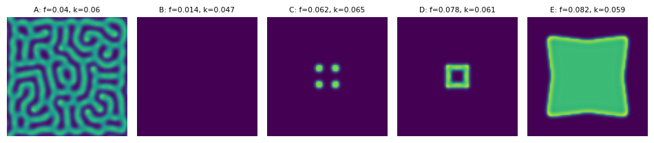

Gray-Scott Parameters
Module 4: Space and Pattern Formation
The feed rate \(f\) and kill rate \(k\) decide what the Gray-Scott solver produces. Pearson (1993) mapped this \((f, k)\) plane with forward Euler on a periodic \(256 \times 256\) grid of physical size \(2.5 \times 2.5\), time step \(1\), and diffusion coefficients \(d_1 = 2 \times 10^{-5}\), \(d_2 = 10^{-5}\). He started from \((1, 0)\) with a central \(20 \times 20\) square set to \((1/2, 1/4)\) plus 1% noise. The course values \(d_1 = 0.1\), \(d_2 = 0.05\) in grid units (\(dx = 1\)) keep his ratio \(d_1/d_2 = 2\) but are not the same scaling, so compare patterns qualitatively.
Pearson (1993) also reports three facts about the kinetics that you should keep in mind:
- The trivial state \((1, 0)\) is linearly stable for all positive \(f\) and \(k\).
- The patterns arise from finite-amplitude perturbations, not from a small-amplitude instability.
- With \(d_1/d_2 = 2\), Turing patterns occur only in a narrow region near \(f = k = 0.0625\).
Five Parameter Sets
Use \(d_1 = 0.1\) and \(d_2 = 0.05\):
| Type | \(f\) | \(k\) |
|---|---|---|
| A | 0.040 | 0.060 |
| B | 0.014 | 0.047 |
| C | 0.062 | 0.065 |
| D | 0.078 | 0.061 |
| E | 0.082 | 0.059 |
Run each set longer and on the full \(250 \times 250\) grid of the assignment. Which sets give isolated spots, which give stripes or labyrinths, and which fill the domain with a moving front?
Connection Back to Turing Analysis
The steady-state, Jacobian, and mode-matrix pipeline from Turing Numerics still applies. Only the spectrum changes: with periodic boundaries the wavenumbers are \(2\pi n/L\).
The trivial state \((u, v) = (1, 0)\) has Jacobian \(\operatorname{diag}(-f, -(f+k))\), so it is linearly stable for every mode. The patterns in Figure 1 therefore start from the finite-amplitude square, not from a Turing instability of \((1, 0)\) (Pearson 1993). Most of Pearson’s patterns occur where no nontrivial uniform state exists at all.
The nontrivial homogeneous equilibria satisfy \(u_* v_* = f + k\). Substituting into \(u_* v_*^2 = f(1 - u_*)\) gives
\[ u_* = \frac{1}{2}\left(1 \pm \sqrt{1 - \frac{4(f+k)^2}{f}}\right), \qquad v_* = \frac{f+k}{u_*}, \tag{1}\]
which exist when \(4(f+k)^2 \le f\). The Jacobian at any homogeneous equilibrium is
\[ J_{\mathrm{GS}} = \begin{pmatrix} -v_*^2 - f & -2u_*v_* \\ v_*^2 & 2u_*v_* - (f+k) \end{pmatrix}. \tag{2}\]
Exercise
Implement both helpers. Keep only equilibria with \(u_* > 0\).
import numpy as np
def gray_scott_equilibria(f=0.040, k=0.060):
equilibria = [(1.0, 0.0)]
discriminant = 1 - 4 * (f + k) ** 2 / f
if discriminant >= 0:
root = np.sqrt(discriminant)
for sign in (+1, -1):
u_star = 0.5 * (1 + sign * root)
# TODO: append the nontrivial equilibrium (u_star, v_star)
return equilibria
def gray_scott_jacobian(u_star, v_star, f=0.040, k=0.060):
# TODO: return the 2x2 Jacobian array
pass
Solution
def gray_scott_equilibria(f=0.040, k=0.060):
equilibria = [(1.0, 0.0)]
discriminant = 1 - 4 * (f + k) ** 2 / f
if discriminant >= 0:
root = np.sqrt(discriminant)
for sign in (+1, -1):
u_star = 0.5 * (1 + sign * root)
if u_star > 0:
equilibria.append((u_star, (f + k) / u_star))
return equilibria
def gray_scott_jacobian(u_star, v_star, f=0.040, k=0.060):
return np.array(
[
[-v_star**2 - f, -2 * u_star * v_star],
[v_star**2, 2 * u_star * v_star - (f + k)],
]
)
Exercise
For Type A (\(f = 0.040\), \(k = 0.060\)), do nontrivial equilibria exist? What about Type C?
Solution
Type A: \(4(f+k)^2/f = 4 \cdot 0.01 / 0.04 = 1\), so the discriminant is \(0\) and the two nontrivial equilibria merge at \(u_* = 0.5\), \(v_* = 0.2\), a saddle-node point. In floating point the discriminant comes out as about \(-2 \times 10^{-16}\), so the code above returns only \((1, 0)\). Type C: \(4 \cdot 0.127^2 / 0.062 \approx 1.04 > 1\), so only \((1, 0)\) exists. In both cases the pattern cannot come from a Turing instability of a nontrivial uniform state that is stable without diffusion.
Once both helpers work, reuse find_unstable_modes_2d from Unstable Modes in 2D. Swap in gray_scott_jacobian, use \(D = \operatorname{diag}(d_1, d_2)\) with no \(\gamma\), and replace \(\pi/L\) by \(2\pi/L\) for the periodic spectrum.
Exercise
Type D (\(f = 0.078\), \(k = 0.061\)) has nontrivial equilibria. List them, compute \(\operatorname{tr} J\) and \(\det J\) at each one, and scan the periodic modes on \(L = 250\) with \(d_1 = 0.1\), \(d_2 = 0.05\). Is any of them Turing unstable?
def find_unstable_modes_gs(u_star, v_star, f, k, d1=0.1, d2=0.05, length=250.0, num_modes=60):
jac = gray_scott_jacobian(u_star, v_star, f, k)
diffusion = np.diag([d1, d2])
unstable_modes = []
# TODO: loop over (n, m), including (0, 0), with k2 = (2 pi / L)**2 (n**2 + m**2)
# TODO: store ((n, m), growth_rate) when the growth rate is positive
return unstable_modes
Solution
There are three equilibria. \((1, 0)\) is stable, with \(\det J > 0\) and \(\operatorname{tr} J < 0\), and no mode grows. The upper state \(u_* \approx 0.548\), \(v_* \approx 0.254\) has \(\det J < 0\): it is a saddle, unstable already without diffusion, so the flat mode \((0, 0)\) grows too. The lower state \(u_* \approx 0.452\), \(v_* \approx 0.307\) is stable without diffusion and no mode grows for \(d_1/d_2 = 2\). So none of them shows a Turing instability, in line with Pearson (1993).
def find_unstable_modes_gs(u_star, v_star, f, k, d1=0.1, d2=0.05, length=250.0, num_modes=60):
jac = gray_scott_jacobian(u_star, v_star, f, k)
diffusion = np.diag([d1, d2])
unstable_modes = []
for n in range(num_modes):
for m in range(num_modes):
k2 = (2 * np.pi / length) ** 2 * (n**2 + m**2)
growth_rate = np.max(np.linalg.eigvals(jac - k2 * diffusion).real)
if growth_rate > 0:
unstable_modes.append(((n, m), growth_rate))
unstable_modes.sort(key=lambda item: item[1], reverse=True)
return unstable_modes
f, k = 0.078, 0.061
for u_star, v_star in gray_scott_equilibria(f, k):
jac = gray_scott_jacobian(u_star, v_star, f, k)
modes = find_unstable_modes_gs(u_star, v_star, f, k)
print(f"({u_star:.3f}, {v_star:.3f}) tr = {np.trace(jac):.4f} det = {np.linalg.det(jac):.5f} unstable modes: {len(modes)}")Next: Gray-Scott: Interaction.
References
Pearson, John E. 1993. “Complex Patterns in a Simple System.” Science 261 (5118): 189–92. https://doi.org/10.1126/science.261.5118.189.